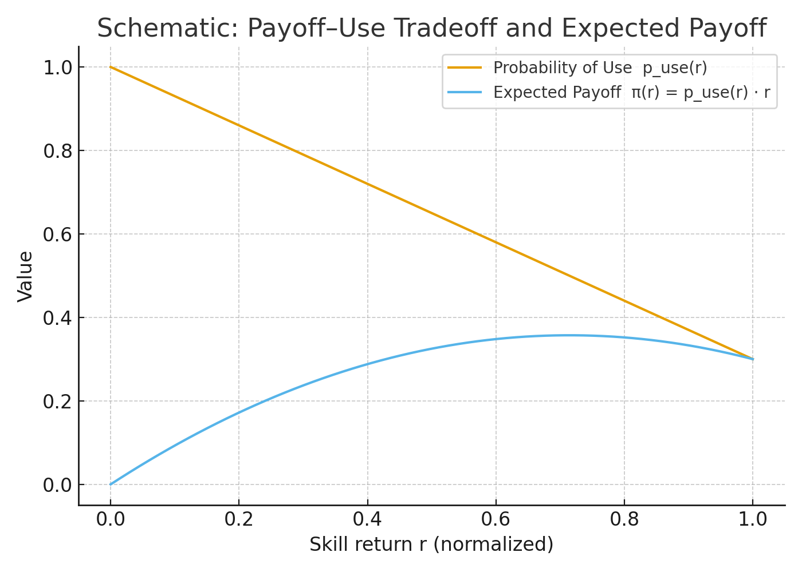

Asymmetric Trajectory Channeling in Labor Markets:
Microfoundations and Macro-Level Evidence for Skills-Based Stratification Reproduction
Roberto Cantillan & Mauricio Bucca
Sociology | Pontificia Universidad Católica de Chile

ABM —
1) Purpose
Explain how and when asymmetries in skills diffusion (upward/lateral/downward) emerge from four minimal levers:
- Status gradient between source and destination occupations.
- Educational/type gate that penalizes mismatches.
- Payoff–use trade-off: higher-return skills are harder to deploy frequently in lower-status jobs.
- Proximity: local network exposure (with optional global fashion signal).
2a) Entities
Occupations and Skills
\[ \mathcal O=\{1,\dots,O\},\qquad \mathcal S=\{1,\dots,S\}. \]
Network
\[ W=(w_{oo'})\quad w_{oo'}\ge 0,\quad \sum_{o'} w_{oo'}=1. \]
Definitions:
- \(\mathcal O\): set of occupations; \(o\in\mathcal O\); cardinality \(|\mathcal O|=O\).
- \(\mathcal S\): set of skills; \(s\in\mathcal S\); cardinality \(|\mathcal S|=S\).
- \(W=(w_{oo'})\): row-stochastic similarity/adjacency; \(w_{oo'}\) is the weight of influence/exposure from \(o'\) to \(o\).
- \(\mathcal N_o=\{o'\in\mathcal O: w_{oo'}>0\}\): \(o\)’s neighborhood in the occupational network.
2b) State
Occupational state and attributes
\[ S_o(t)\subseteq \mathcal S,\qquad SES_o\in\mathbb R,\qquad k\in\mathbb N. \]
Global signal (optional)
\[ G_s(t)\in[0,1],\qquad \tau_g\in[0,1]. \]
Definitions:
- \(S_o(t)\): set of skills currently used by occupation \(o\) at time \(t\).
- \(SES_o\): continuous status index of occupation \(o\) (e.g., socioeconomic standing).
- \(k\): per-period adoption capacity (maximum number of new skills \(o\) can adopt at \(t\)).
- \(G_s(t)\): global prevalence of skill \(s\) at time \(t\) (normalized to \([0,1]\)).
- \(\tau_g\): threshold on global prevalence to include \(s\) in the consideration set.
2c) Scales
Time
\[ t\in\{0,1,\dots,T\}. \]
Updating
Synchronous baseline (robustness: test asynchronous/random order).
Definitions:
- \(t\): discrete period; all decisions at \(t\) use information from \(t-1\).
3) Consideration Set & Exposure
For occupation \(o\), the consideration set combines local neighbors’ skills and an optional global signal:
\[ \mathcal C_o(t)=\{s:\exists\,o'\; w_{oo'}>0,\ s\in S_{o'}(t-1)\}\ \cup\ \{s: G_s(t-1)>\tau_g\}. \]
Define the local exposure:
\[ Y_{o,s}(t-1)=\sum_{o'} w_{oo'}\,\mathbf 1\{s\in S_{o'}(t-1)\}. \]
Local–global mix (with \(\rho\)):
\[ E_{o,s}(t-1)=(1-\rho)\,Y_{o,s}(t-1)+\rho\,\mathbf 1\{G_s(t-1)>\tau_g\}. \] Use \(E_{o,s}\) wherever explicit exposure enters the decision rule.
4) Payoff–Use Trade-off (Intuition)
- Higher-return skills (large \(r_s\)) tend to be harder to use frequently in lower-status destinations.
- Expected gain is maximized at intermediate \(r_s\) when use is still non-trivial.

5) Payoff–Use Trade-off (Formal)
Let \([x]_+ = \max\{x,0\}\). Define the probability of use with a clipped linear form that declines with return and distance, and penalizes mismatches:
\[ p_{use,o}(s)=\big[1-\kappa\,r_s-\delta\,d_{os}\big]_+\cdot (1-\theta\,\mathbf 1\{\text{education mismatch}\})\cdot (1-\psi\,\mathbf 1\{\text{type mismatch}\}). \]
The expected utility of adopting \(s\) into occupation \(o\):
\[ \pi_{o,s}=p_{use,o}(s)\cdot r_s - \lambda\, d_{os}. \]
6) Status Gradient & Directionality
Let \(\mathcal N_o=\{o'\,|\,w_{oo'}>0\}\) be \(o\)’s neighborhood. Define source-weighted status gaps for any \(s\in\mathcal C_o(t)\):
\[ \Delta^{+}_{o}(s)=\sum_{o'\in\mathcal N_o} w_{oo'}\,\mathbf 1\{s\in S_{o'}(t-1)\}\,\max(0,\, SES_{o'}-SES_o), \]
\[ \Delta^{-}_{o}(s)=\sum_{o'\in\mathcal N_o} w_{oo'}\,\mathbf 1\{s\in S_{o'}(t-1)\}\,\max(0,\, SES_o-SES_{o'}). \] These measure upward vs downward direction without imposing legitimacy by type or direction ex ante.
7) Decision Rule (Logit with “no-adopt”)
Latent utility for each candidate skill \(s\in\mathcal C_o(t)\):
\[ u_{o,s}=\alpha_o+\beta\,\pi_{o,s}+\beta^{+}\,\Delta^{+}_{o}(s)-\beta^{-}\,\Delta^{-}_{o}(s)+\mu\,E_{o,s}(t-1). \]
Set \(u_{o,\varnothing}\equiv 0\) unless otherwise stated. Choice probabilities (Multinomial Logit with an explicit no-adopt alternative \(\varnothing\)):
\[ P_{o}(s)=\frac{\exp(u_{o,s})}{\exp(u_{o,\varnothing})+\sum_{q\in\mathcal C_o(t)}\exp(u_{o,q})}. \]
Capacity: sample up to \(k\) adoptions per \(o\) without replacement according to \(P_o(s)\) (or emulate \(k\) via a congestion term in utilities).
8) Process Overview & Scheduling
At each period \(t\to t{+}1\):
- Build \(\mathcal C_o(t)\) for all \(o\) (neighbors + optional global signal).
- Compute \(d_{os}\), \(p_{use,o}(s)\), \(\pi_{o,s}\), utilities \(u_{o,s}\).
- Draw up to \(k\) adoptions per occupation via the choice probabilities.
- Synchronous update: \(S_o(t{+}1)=S_o(t)\cup A_o(t)\).
- Update global signal \(G_s(t)\) if used.
- With small probability \(\epsilon\), add/rewire a long tie in \(W\).
9) Design Concepts (ODD-style)
- Basic principle: selective imitation constrained by structural fit and costs of use; trade-off yields interior maxima → mid-return skills diffuse most.
- Emergence: asymmetric upward/lateral/downward flows arise from \((\kappa,\delta,\theta,\psi,\beta^{\pm})\); no exogenous legitimacy.
- Sensing/Interaction: local observation via \(W\) and optional global fashion signal.
- Stochasticity: in discrete choice and rare long ties.
- Observation: adoption rates by type, distribution of \(\Delta SES\) in events, decay with \(d_{os}\), cascade sizes, trajectories.
10) Initialization
- Specify \(|\mathcal O|,|\mathcal S|\), network \(W\).
- Seeds \(S_o(0)\): (i) baseline sparse; (ii) stratified (more high-return skills in high-SES occupations) to study mobility.
- Parameters (illustrative, not calibrated): \(\kappa\in[0,1]\), \(\delta,\lambda\ge0\), \(\theta,\psi\in[0,1]\), \(\rho\in[0,1]\), capacity \(k\in\{1,2,\dots\}\), and \(\beta,\beta^{\pm},\mu\) freely scaled.
11) Submodels
- Distance \(d_{os}\): e.g., \[ d_{os}=\min_{o':\,s\in S_{o'}(t-1)}\,\mathrm{dist}_W(o,o') \quad \text{or} \quad d_{os}=\sum_{o'}w_{oo'}\,\mathbf 1\{s\in S_{o'}(t-1)\}\,\mathrm{dist}_W(o,o'). \]
- Education mismatch (operational): let \(edu(o)\in\{0,1,\dots\}\) be the gate in destination and \(req(s)\in\{0,1,\dots\}\) the requirement of the skill; \[ \mathbf 1\{\text{education mismatch}\}=\mathbf 1\{\,req(s)>edu(o)\,\}. \]
- Type mismatch (operational): let \(\tau(s)\in\{\mathrm{cog},\mathrm{phy}\}\) and \(\theta^{type}(o)\) the dominant type in \(o\); parsimoniously, \[ \mathbf 1\{\text{type mismatch}\}=\mathbf 1\{\,\tau(s)\ne \arg\max_{type}\,\theta^{type}(o)\,\}. \]
- Global signal update: \(G_s(t)=f\!\big(\sum_o \mathbf 1\{s\in S_o(t)\}\big)\) or SES-weighted prevalence.
12) Theoretical Experiments (No Calibration)
- Univariate sweeps: \(\kappa\) (trade-off steepness), \(\theta/\psi\) (gates), \(\rho\) (fashion), \(k\) (capacity).
- Mechanism toggles: on/off \(E_{o,s}\); on/off \(\Delta^{\pm}\); on/off long ties \(\epsilon\).
- Scheduling: synchronous vs asynchronous (random order).
- Functional robustness: replace clipping with a smooth logistic in \(p_{use}\): \[ p_{use,o}(s)=\sigma\big(a-b\,r_s-c\,d_{os}-\theta\,\mathbf 1\{\text{edu mis}\}-\psi\,\mathbf 1\{\text{type mis}\}\big),\ \ \sigma(x)=\frac{1}{1+e^{-x}}. \]
12b) Reproducibility & Runs
- Seeds: fix random seed per run; run \(R\) replicates per parameter cell; report median and 80% PI.
- Batch grid (example): \(\kappa\in\{0.2,0.5,0.8\}\), \(\rho\in\{0,0.3,0.6\}\), \(k\in\{1,2\}\).
- Outputs: store time series and event logs (adoptions with \((o,s,t)\) and \(\Delta SES\)) for diagnostics.
12c) Rival Mechanisms & Null Models
Fashion-only: \(\beta^{+}=\beta^{-}=0\), utility depends only on \(E_{o,s}\) and \(r_s\).
Functional-only: \(\beta^{+}=\beta^{-}=0\) and no explicit exposure (drop \(E_{o,s}\)) → adoption driven by \(\pi_{o,s}\).
Network/industry placebo: rewire \(W\) conserving degree (or, when calibrating, add NAICS FE). Compare P1–P5 vs full model.
13) Outputs & Testable Implications
- P1 Upward share: higher for cognitive than physical skills.
- P2 Distance robustness: cognitive adoption decays less with structural distance \(d_{os}\).
- P3 Gate sensitivity: tightening the education gate reduces physical upward flows more.
- P4 Positive tail: adopted-event \(\Delta SES\) shows a heavier positive tail for cognitive.
- P5 Comparative statics: widening \((\beta^{+}-\beta^{-})\) amplifies P1–P4.
- Diagnostics: adoption vs \(r_s\); adoption vs \(d_{os}\); hazard by \(\Delta SES\).
13b) Operational Definitions (Outcomes)
Upward share (by type)
\[ \text{UpShare}_{type}=\frac{\#\{(o,s,t): s\in A_o(t),\ \Delta^{+}_{o}(s)>\Delta^{-}_{o}(s),\ \tau(s)=type\}}{\#\{(o,s,t): s\in A_o(t),\ \tau(s)=type\}}. \]
Distance decay (binned)
Group adoptions by quantiles of \(d_{os}\) and plot \(\Pr(\text{adopt}|d\in q)\) by type.
Gate sensitivity
\[ \Delta\text{UpShare}_{type}(\theta: \theta_0\to\theta_1)=\text{UpShare}_{type}\big|_{\theta_1}-\text{UpShare}_{type}\big|_{\theta_0}. \]
Tail of \(\Delta SES\) (CCDF)
For adopted events, compare \(\Pr(\Delta SES>x)\) across types.
14) Minimal Pseudocode
for t in 1:T:
for each occupation o in O:
C = consideration_set(o, t, W, G, tau_g)
for each s in C:
d = distance(o, s, W)
p_use = clip(1 - kappa*r[s] - delta*d) \
* (1 - theta*edu_mismatch(s, o)) \
* (1 - psi*type_mismatch(s, o))
pi = p_use * r[s] - lambda*d
u[s] = alpha[o] + beta*pi + beta_pos*Delta_plus(o, s) \
- beta_neg*Delta_minus(o, s) + mu*E[o, s]
A_o = sample_up_to_k_from_softmax(u U {u_null}, k) # without replacement
S(t+1) = synchronous_update(S(t), {A_o}_o)
G = update_global_signal(S(t+1))Cantillan & Bucca | Asymmetric Trajectory Channeling in Labor Markets | 2025